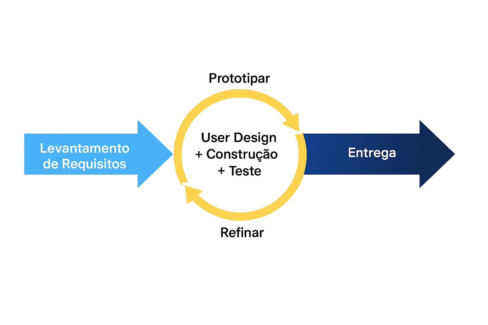

5. Cronogramas e Entregas
| Ciclo | Fases RAD | Início | Fim | Objetivo Principal | Entregas Esperadas | Validação do Cliente |
|---|---|---|---|---|---|---|
| Ciclo 1 | Levantamento de Requisitos | 22/04/25 | 04/05/25 | Levantamento dos Requisitos | - Documento com requisitos definidos | Revisão e validação dos requisitos por videochamada |
| 05/05/25 | 10/06/25 | Definição e Priorização do Backlog | - Documento com o backlog definido - Priorização dos itens do backlog com MoSCoW |
Revisão do documento de backlog | ||
| Ciclo 2 | User Design | 11/06/25 | 24/06/25 | Interface do administrador e catálogo dos produtos | Prototipação da página do administrador e do catálogo de produtos | Validação de interface |
| Construção e Entrega | 25/06/25 | 02/07/25 | Interface do administrador e catálogo dos produtos | Construção da página de catálogo de produtos - US07, US18, US20, US21 |
Validação dos itens backlog implementado | |
| Ciclo 3 | User Design | 03/07/25 | 03/07/25 | Carrinho | Prototipação do carrinho de produtos | Validação de interface |
| Construção e Entrega | 04/07/25 | 05/07/25 | Carrinho | Funcionalidade de carrinho de compras - US09, US10, US11 |
Validação do carrinho de compras | |
| Ciclo 4 | User Design | 06/07/25 | 06/07/25 | Pedidos e pagamento através da plataforma | Prototipação Processo de compra | Validação de Interface |
| Construção e Entrega | 07/07/25 | 11/07/25 | Pedidos e pagamento através da plataforma | - Ver o resumo da compra - Selecionar meio de pagamento - Integração com sistema de pagamento externo; US12, US13 |
Validação dos itens do backlog implementados | |
| Ciclo 5 | User Design | 12/07/25 | 12/07/25 | Gerenciamento de pedidos; Troca/devolução de pedidos | Prototipação | Validação de Interface. |
| Construção e Entrega | 13/07/25 | 14/07/25 | Gerenciamento de pedidos; Troca/devolução de pedidos | - Gerenciar situação do pedido (admin); - Visualizar situação do pedido (usuário). - Sistema de solicitação (e confirmação) de troca/devolução de produtos; US17, US22 |
Validação do gerenciamento de pedidos e do sistema de solicitação de troca/devolução | |
| Ciclo 6 | Entrega | 14/07/25 | 14/07/25 | Lançamento do MVP e Monitoramento | - Lançamento parcial do sistema para todos os usuários - Monitoramento pós-lançamento e ajustes com base nos primeiros feedbacks. |
Homologação pela cliente e aprovação do MVP. Feedback dos primeiros usuários reais e ajustes pós-lançamento do MVP. |
| Ciclo 7 | User Design | 15/07/25 | 18/07/25 | Autenticação e dados pessoais | Prototipação do sistema de autenticação e de edição de dados pessoais. | Validação de Interface |
| Construção | 19/07/25 | 23/07/25 | Autenticação e dados pessoais | - Implementação de sistema de autenticação de usuários; - Implementação da edição de dados pessoais do usuário US01, US02 |
Validação do sistema de autenticação | |
| Ciclo 8 | User Design | 24/07/25 | 27/07/25 | Avaliação de produtos | Prototipação do sistema de avaliação de produtos. | Validação de interface |
| Construção | 28/07/25 | 01/08/25 | Avaliação de produtos | - Sistema de avaliação de produtos pelos usuários US15, US16 | Validação do sistema de avaliações de produtos | |
| Ciclo 9 | User Design | 02/08/25 | 05/08/25 | Personalização de produto | Prototipação do sistema de personalização de produto. | Validação de interface |
| Construção | 06/08/25 | 10/08/25 | Personalização de produto | - Personalização de produtos. US08 | Validação do mecanismo de personalização de produto. | |
| Ciclo 10 | User Design | 11/08/25 | 14/08/25 | Desconto em compras por divulgação da plataforma | Prototipação do sistema de desconto por divulgação. | Validação de interface |
| Construção | 15/08/25 | 19/08/25 | Desconto em compras por divulgação da plataforma | - Implementação de sistema de descontos para usuários que divulgarem a plataforma US14 | Validação do sistema de descontos por divulgação | |
| Ciclo 11 | Entrega | 20/08/25 | 28/08/25 | Entrega Final | - Lançamento final do sistema, para todos os usuários. | Homologação pela cliente e aprovação final. Feedback dos primeiros usuários reais e ajustes pós-lançamento final. |
Considerações importantes:
-
Datas de início e fim: Cada ciclo tem a duração de 9 dias, começando em 22/04/25 e finalizando em 28/08/25, distribuindo as entregas parciais ao longo do tempo, com exceção dos ciclos 1 ao 6, que devido à necessidade de entrega do MPV no dia 14/07/25, foram encurtados em poucos dias.
-
Etapas da metodologia RAD a cada ciclo: Inicialmente, será realizada a etapa de levantamento de requisitos, em conjunto com a cliente. Em seguida, ocorrerá o User Design (prototipação), com foco na validação das necessidades e ajustes baseados em feedbacks. Em cada ciclo de entrega, serão realizadas a construção rápida e incremental de cada User Story, seguida de testes frequentes para validação e, posteriormente, a entrega das funcionalidades ao cliente. No último ciclo (cutover), será realizada a implantação completa do sistema.
-
Ciclos: O RAD é centrado na iteratividade, prototipação rápida, feedback constante dos usuários e ajustes contínuos, e o nosso ciclo ilustrado na figura 2 segue a seguinte lógica:
a. Levantamento de Requisitos - Corresponde à fase em que são resgatadas as necessidades dos stakeholders e traduzidas para implementações de software a fim de identificar e resolver problemas.
b. User Design + Construção - As etapas de User Design e de Construção no RAD consistem em ciclos integrados onde as necessidades do usuário são continuamente entendidas e refinadas por meio de protótipos funcionais, em que o desenvolvimento e a codificação dos componentes são realizados de forma rápida, e o produto é validado frequentemente com testes para identificar e corrigir falhas, garantindo ajustes constantes baseados no feedback dos usuários.
c. Entrega - Diz respeito à fase em que todas as funcionalidades do software desenvolvido são entregues e prontas para uso.
A sequência circular a sugere um processo iterativo:
